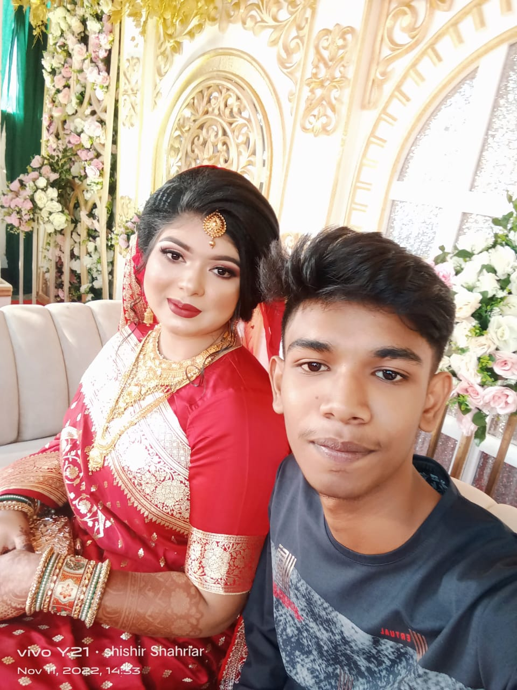

Hi,I'm Shishir Shahriar.I have come from Kalampur, Dhamrai, Dhaka. I live in Savar.I'm a Student.I got GPA-5 in SSC from Alhaz Abdul Goni Model School.Now i'm a student of Jahangirnagar University School and College.my favorite subject is English.my hobbies are go shopping.my favorite food is burger.in my free time i also injoy playing cricket.i study english because i want to learn more about this language
